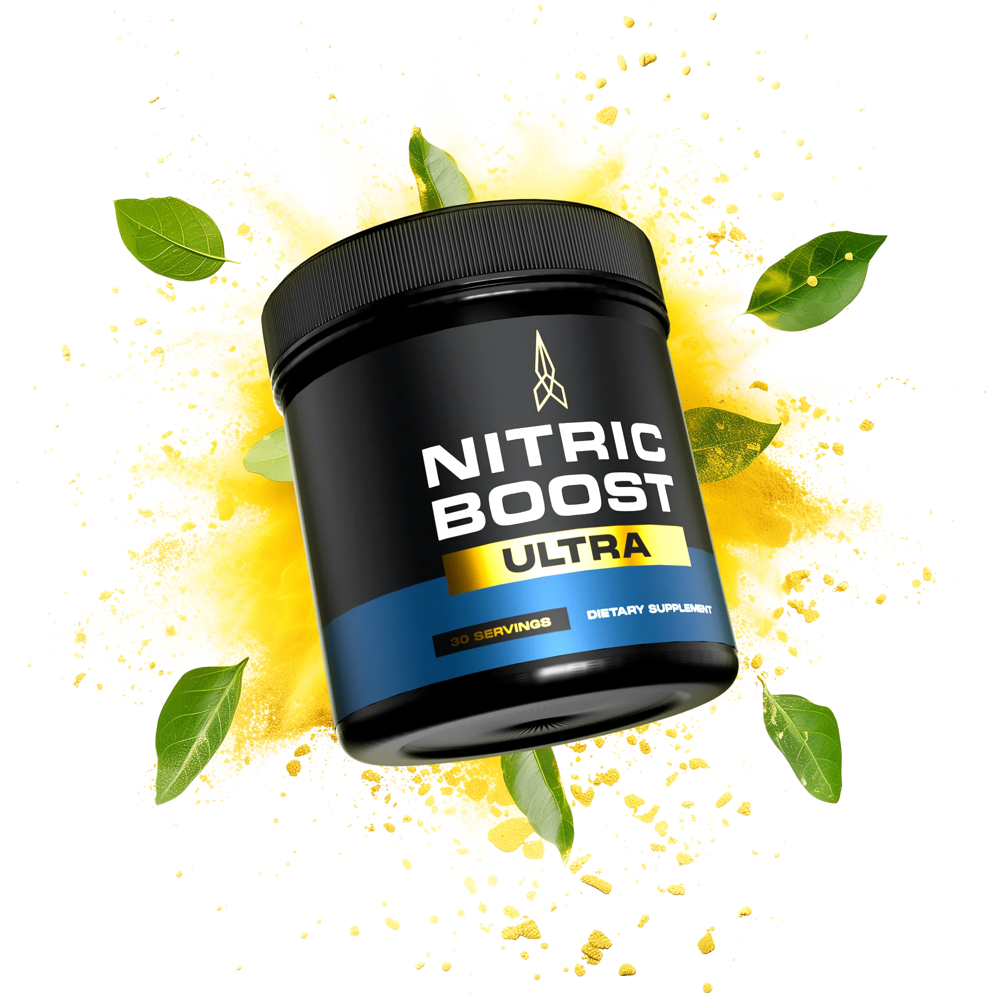
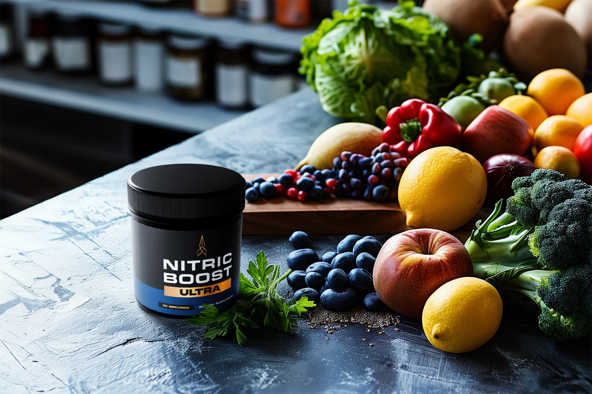
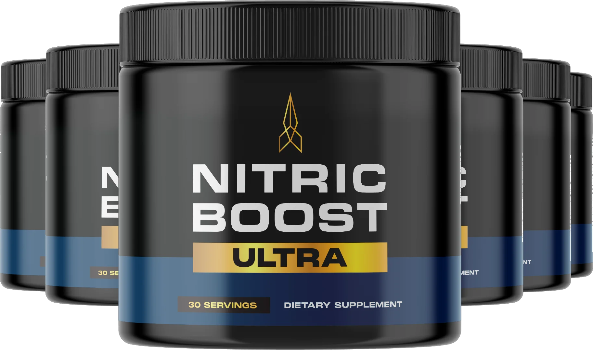

L-Citrulline DL-Malate
An amino-acid compound commonly included in nitric-oxide and exercise-support formulas.
A powdered men’s wellness supplement built around nitric-oxide precursors, botanical extracts and nutrients commonly found in circulation and vitality formulas.
You will be redirected to the seller’s website. We do not process orders or payments.

Click the product to learn moreNitric Boost Ultra is marketed as a once-daily dietary supplement for adult men. Its formula combines amino acids, beet root, botanical extracts and niacin.
The core idea is nutritional support for pathways associated with nitric oxide production, circulation, daily energy and male vitality. It is not a prescription treatment and should not be presented as a cure for erectile dysfunction or any medical condition.
Ingredient descriptions are informational and based on the formula presented by the seller. Always check the label on the container you receive.
An amino-acid compound commonly included in nitric-oxide and exercise-support formulas.
A nutritional precursor the body uses in nitric-oxide production.
A natural source of dietary nitrates often used in circulation-focused products.
A botanical traditionally used in products focused on circulation and antioxidant support.
Also called epimedium, a plant traditionally associated with vitality formulas.
A traditional botanical included as part of the broader plant blend.
An amino acid involved in normal biological signaling and used in men’s wellness products.
Vitamin B3, an essential nutrient that contributes to normal energy metabolism.

The current directions describe mixing one scoop with approximately eight ounces of water or another preferred beverage. Follow the label included with your product.
The seller controls pricing, inventory, shipping, refund eligibility and customer service. Verify all current terms before ordering.

No. It is marketed as a dietary supplement and is not intended to diagnose, treat, cure or prevent disease.
No. Prime USA Shop is an independent informational website. All orders, payments, shipping and refunds are handled by the seller through its website.
No. Individual responses vary. A refund policy relates to purchase eligibility under the seller’s terms and does not guarantee a health outcome.
Use one of the clearly marked buttons on this page to visit the seller’s current presentation. Pricing and availability can change.
Anyone using medication, managing a health condition, preparing for surgery, or experiencing persistent sexual, circulatory, blood-pressure or cardiac concerns.
No order is processed on this website.